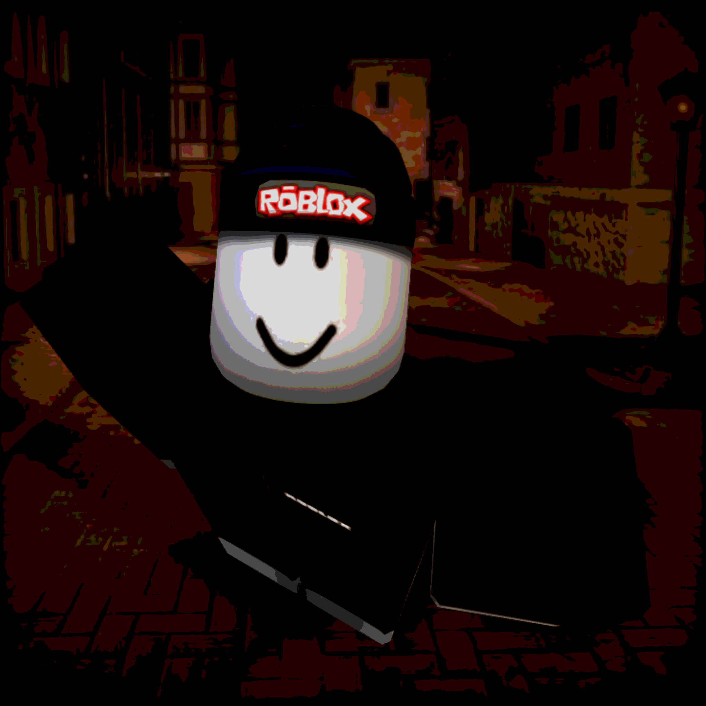

GFX Artist
Welcome to my desktop! I create GFX thumbnails and icons for developers and content creators.
Modelling: Nomad Sculpt | Visuals: ibis Paint X
Custom mobile utility built on Android/Sketchware.
Status: Ready
CPU Usage: 2%